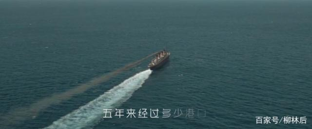
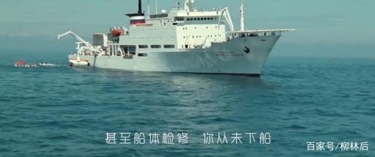
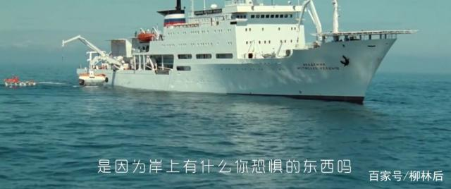
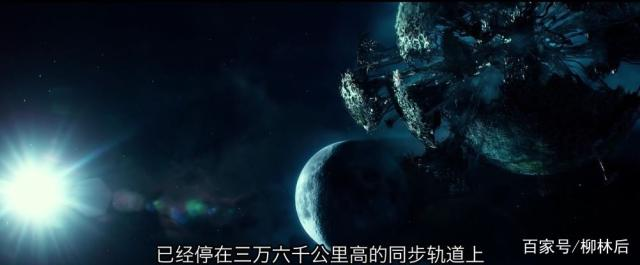

2019.10.10
各位小伙们，柳林后又来了。今天网上浏览了下新闻，看到小哪吒只差几千万就要破五十亿了，刘慈欣和吴京的小破球已经被它反超，恭喜一下哈。
冯帆，没读过刘慈欣小说的当然不知道是谁，这就是接下来柳林后要跟小伙伴谈到的。刘慈欣因为小破球而人气暴涨，他的作品也马上变成了香饽饽，成了被哄抢的对象，多部作品已经被无数家影视公司抢得一个不剩下。但是这些并不是柳林后感兴趣的地方，柳林后非常期待的，是他与吴京的下一个合作。
是的，刘慈欣和吴京又要开始合作下一部电影了，这就是很多网友都很喜欢的《山》。据说冯帆这个角色，刘慈欣钦定了，指定了要吴京。
从网上网友的评论来看，大家都与柳林后一样，非常期待这一部作品了，很多网友说，就冲着大牛的作品，这部电影就要去看，至于说谁演的，到是不在乎。但也有网友透露，其实吴京想合作的是《全频带阻涉干扰》，为什么这么说呢，因为小破球见面会的时候，吴京问大刘有没有军事题材的，大刘推荐了这部《全频带阻涉干扰》。
结合大刘的原著小说，柳林后稍微的透露一下原著的内容，这可不是电影的剧情，因为柳林后并没有看到剧本。小说一开始，船长就问吴京，这么多年来你从不下船，甚至是船体检修你都从来不下船。
船长又问了吴京一句话，是因为岸上有什么你恐惧的东西吗。吴京没有回答，仰望着天空中的星星，陷入了沉思，故事由此拉开了帷幕。
接下来，就是这个故事最核心的部分，也是故事的精髓和高潮，一艘外星飞船停在了地球的上空，这艘飞船太大了，它的引力大到把地球的大气层都扯出了一个大空洞。
看到这里，小伙伴们想到了什么，女娲补天吗，是不是对这部电影很期待了呢，柳林后再强调一下，大气层的这个空洞会让空气极速地外泄和流失掉。所以，这么一个极其紧张和刺激的科幻作品，拍成电影会是什么样呢。 Wu Jing's next film may be about Liu Cixin's Mountain.